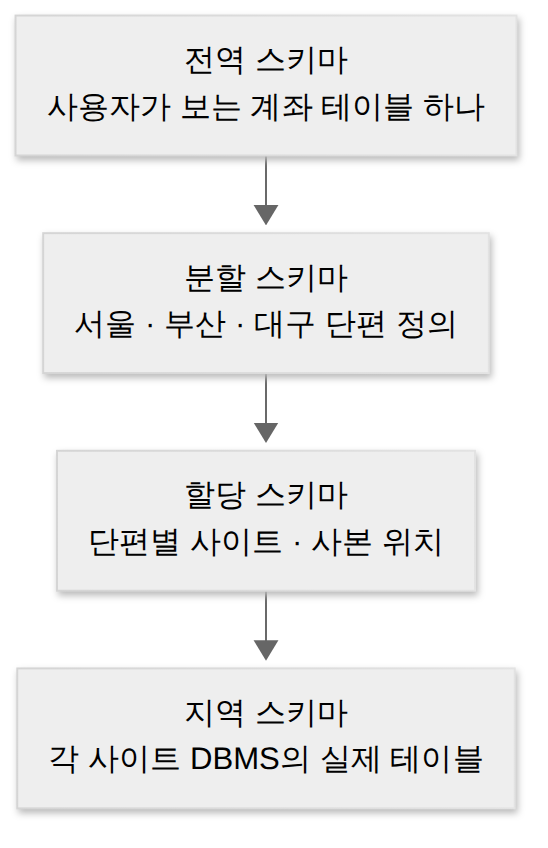

D054 · 저장은 어디에, 지점이 흩어지면 — 물리 설계 작업 · DAS/NAS/SAN · RAID · 분산 DB · 투명성 · 단편화
B4 어제 D053은 은행이 둘일 때 2PC로 “함께 커밋하거나 함께 롤백”하는 약속을 보며 끝났어요. 오늘은 그 은행 데이터가 실제로 어디에, 어떤 모양으로 놓이는지 내려가 봐요. 2과목의 넷째 큰 범위인 물리 데이터베이스 설계의 첫날이에요. 사례는 푸른은행의 계좌 테이블 하나가 서버 한 대에서 서울 · 부산 · 대구 세 지점으로 퍼져 가는 이야기예요. 물리 설계 작업은 최근 20회 시험 중 15회, 분산 DB와 투명성은 12회 나왔어요.
- 물리 설계에서 하는 일(저장 레코드 양식 · 레코드 집중 · 접근 경로)과 논리 설계의 일(스키마 평가 · 정제)을 구별하고, 물리 설계 고려사항 세 가지를 말한다
- DAS · NAS · SAN을 “서버와 저장장치 사이에 무엇이 끼나”로 가르고 장단점을 짝지으며, RAID 0 · 1 · 5 · 6 · 10을 스트라이핑 · 미러링 · 패리티로 구별한다
- 분산 DB의 정의 · 구성 요소 세 가지 · 네 계층 스키마 · 장단점을 설명하고, 투명성 다섯 가지와 가짜 이름(Media Access)을 가른다
- 수평 · 수직 단편화와 할당 · 복제를 구별하고, 나눈 조각이 지켜야 할 세 조건(완전성 · 재구성 · 분리)을 직접 확인한다
1부 (약 18분)
2부 (약 19분)
0. 오늘의 지도 — 계좌 테이블 하나가 커지는 다섯 장면
푸른은행 개발팀은 지난주까지 계좌 테이블 acct(id, owner, branch, bal, tier)를 정규화해 논리 설계를 끝냈어요. 이제 남은 질문은 “이 테이블을 디스크에 어떻게 적고, 어떤 순서로 찾아가게 할까”예요. 이 질문이 장면 1의 물리 설계이고, “그 디스크는 어디에 어떻게 붙어 있나”가 장면 2의 스토리지예요.
은행이 부산 · 대구에 지점을 내면 질문이 하나 더 생겨요. 지점 고객의 계좌를 서울 본사 서버에만 둘지, 각 지점 서버에 나눠 둘지요. 나눠 두면 분산 DB가 되고(장면 3), 사용자가 그 사실을 몰라도 되게 숨기는 성질이 투명성(장면 4), 실제로 무엇을 어떻게 쪼갤지가 분산 설계(장면 5)예요.
1. 장면 1 — 논리 설계가 끝난 뒤, 물리 설계가 하는 일 기출 15회
정의: 물리적 설계는 논리 설계에서 만든 릴레이션 스키마를 특정 DBMS가 실제로 저장하고 처리할 수 있는 저장 구조와 접근 경로로 바꾸는 단계예요. 왜 따로 필요할까요? 논리 스키마는 “어떤 테이블에 어떤 열이 있다”까지만 말해요. 같은 스키마라도 열 순서 · 데이터 타입 · 인덱스 · 파일 배치에 따라 같은 조회가 0.01초가 되기도 하고 10초가 되기도 해요. 논리 설계가 가구 배치도를 그린 단계라면, 물리 설계는 그 가구를 어느 방 어느 서랍에 넣을지 정하는 시공 단계예요.
물리적 설계 단계 작업은 세 가지가 대표적이에요. 저장 레코드 양식 설계는 한 행이 디스크에 어떤 모양으로 놓일지, 즉 필드의 데이터 타입 · 길이 · 순서를 정하는 일이에요. 푸른은행이라면 bal을 정수로 둘지 소수로 둘지, 자주 바뀌는 열과 거의 안 바뀌는 열을 어떻게 배치할지가 여기에 들어가요. 레코드 집중(클러스터링)의 분석 · 설계는 함께 읽히는 레코드를 디스크의 가까운 블록에 모아 두는 방안을 정하는 일이에요. 같은 지점 계좌를 한 번에 조회하는 일이 많다면 지점별로 모아 두면 디스크를 덜 오가요. 접근 경로 설계는 원하는 레코드를 어떤 길로 찾아갈지, 즉 인덱스 · 해싱 같은 접근 방법을 정하는 일이에요.
반대로 물리 설계가 아닌 일도 분명히 해 둬야 해요. 목표 DBMS의 데이터 모델(관계형)에 맞춰 E-R 다이어그램을 릴레이션 스키마로 옮기고, 정규화하고, 완성한 스키마를 평가 · 정제하는 일은 논리 설계예요. 트랜잭션을 처음 모델링하는 일은 개념 설계 쪽이고, 트랜잭션 인터페이스 설계는 논리 설계 쪽이에요. 개념 스키마를 모델링하고 사용자 뷰를 통합하는 일도 개념 설계라서, 물리 설계 문제의 가짜 선지로 자주 끼어요. 물리 설계는 이미 정해진 스키마를 받아서 “어떻게 저장할까”만 고민해요. 도면 점검과 시공을 같은 사람이 해도 일의 이름은 다르다는 뜻이에요.
작업을 고를 때 무엇을 기준으로 삼을까요? 물리 설계 고려사항은 시험 문구로 세 가지예요. 응답 시간은 사용자가 요청한 뒤 결과를 받기까지 걸리는 시간이고, 계좌 조회 화면이 1초 안에 떠야 한다는 요구가 여기에 해당해요. 저장 공간의 효율화는 같은 데이터를 더 적은 디스크로 담는 것이고, 필드 길이를 과하게 잡지 않는 것도 이 목표 때문이에요. 트랜잭션 처리량은 단위 시간에 처리할 수 있는 트랜잭션 수예요. 월급날 아침 이체가 몰려도 버틸 수 있어야 해요.
세 목표는 서로 당기기도 해요. 인덱스를 많이 만들면 조회 응답 시간은 줄지만 저장 공간이 늘고, 이체 같은 갱신 트랜잭션은 인덱스까지 고쳐야 해서 처리량이 떨어질 수 있어요. 그래서 물리 설계는 “무엇이 자주 일어나나”를 먼저 보고 균형을 맞춰요. 레코드 양식을 정할 때도 데이터 타입 · 값의 분포 · 접근 빈도를 함께 봐요.
한 장 요약 — 작업 이름만 보고 어느 단계인지 가르는 질문이에요.
| 작업 | 가르는 질문 | 단계 |
|---|---|---|
| 저장 레코드 양식 설계 | 한 행이 디스크에 어떤 모양 · 길이로 놓이나? | 물리 |
| 레코드 집중 분석 · 설계 | 함께 읽는 행을 가까이 모으나? | 물리 |
| 접근 경로 설계 | 인덱스 · 해싱으로 어떻게 찾아가나? | 물리 |
| 목표 DBMS에 맞는 스키마 설계 | E-R을 릴레이션으로 옮기나? | 논리 |
| 스키마 평가 · 정제, 정규화 | 만든 스키마를 점검하고 다듬나? | 논리 |
| 트랜잭션 모델링 | 업무 처리 흐름을 처음 정의하나? | 개념 |
그림 3. 물리 설계와 이웃 단계를 가르는 질문.
결과물 → 다음 장면: 계좌 테이블을 어떤 모양으로, 어떤 순서로 찾아가게 저장할지 정했어요. 그런데 그 디스크는 서버에 어떻게 붙어 있을까요? 다음은 저장장치 자체를 고르는 장면이에요.
2. 장면 2 — 데이터는 어디에 두나: DAS · NAS · SAN과 RAID
정의: 스토리지는 데이터를 보존하고 필요할 때 꺼내 쓸 수 있게 해 주는 저장장치와 그 연결 구성이에요. 푸른은행 서버가 한 대일 때는 서버 안 디스크면 충분했어요. 그런데 서버가 늘고 데이터가 테라바이트 단위로 커지면 “디스크를 누가 같이 쓰나, 한 대가 꺼지면 어떻게 되나”가 문제가 돼요. 그래서 저장장치를 서버에 잇는 방식이 세 가지로 갈라졌어요.
DAS(Direct Attached Storage)는 서버와 외장 저장장치를 전용 케이블로 직접 연결하는 방식이에요. 서버의 호스트 버스 어댑터(HBA)에 디스크를 바로 꽂으니 중간에 스위치 같은 네트워크 장치가 없어요. 전용 선이라 빠르고 안정적이지만, 그 디스크는 그 서버 전용이라 다른 서버와 공유하기 어렵고 저장장치마다 붙이는 방법도 제각각이에요. 내 책상 서랍처럼 손은 제일 빨리 닿지만, 옆자리 동료는 열어 볼 수 없어요.
NAS(Network Attached Storage)는 저장장치를 LAN에 붙이고, 그 안에 내장된 파일 서버가 파일 시스템을 여러 서버에 공유해 주는 방식이에요. 서버는 “이 파일 주세요”처럼 파일 단위로 요청하고, NFS · SMB 같은 파일 공유 프로토콜을 써요. 서버와 저장장치가 독립적이라 공유와 증설이 쉬워요. 대신 모든 요청이 파일 서버를 거치니 요청이 몰리면 병목이 생기고, 파일 서버가 멈추면 아무도 접근하지 못해요. 서류 캐비닛 담당자가 휴가를 가면 그날은 아무도 서류를 못 꺼내는 사무실과 같아요.
SAN(Storage Area Network)은 서버와 저장장치를 광섬유 채널(Fibre Channel) 기반의 전용 네트워크로 연결하는 방식이에요. 일반 LAN과 분리된 저장 전용 망 위에서 서버가 디스크를 자기 디스크처럼 블록 단위로 읽고 써요. DAS의 접속 한계를 넘어 여러 서버가 여러 저장장치를 함께 쓸 수 있고 속도도 빨라요. 대가는 비용이에요. 전용 스위치 · 장비 · 운영 인력이 들고, 서로 다른 종류의 서버를 섞으면 지원이 약하며, 공유할 수 있는 파일 시스템과 데이터 형식에도 제한이 있어요.
한 장 요약 — 위 세 문단을 기출 키워드로 묶으면 아래와 같아요.
| 방식 | 연결 · 접근 단위 | 장점 ↔ 단점 |
|---|---|---|
| DAS | 전용 케이블 직결(HBA), 블록 | 빠르고 안정 ↔ 공유 곤란, 장치마다 접속 방법 다름 |
| NAS | LAN + 파일 서버, 파일 | 서버와 독립 · 공유 쉬움 ↔ 파일 서버 병목, 파일 서버가 꺼지면 접근 불가 |
| SAN | 광채널 전용망, 블록 | 여러 서버 · 저장장치 공유, 고속 ↔ 비용 높음, 이기종 지원 · 파일 시스템 공유 제한 |
그림 5. DAS · NAS · SAN 비교.
같은 “거래 내역 파일 읽기” 요청이 세 방식에서 어떤 길을 지나는지 단계별로 따라가 봐요. 각 방식의 단점이 어디서 생기는지 보이는 게 핵심이에요.
| 구간 | 일어나는 일 |
|---|---|
| 서버 → 전용 케이블 | 서버가 자기 디스크처럼 블록을 바로 읽음 |
| 저장장치 | 서울 서버 한 대 전용 |
① DAS. 중간에 네트워크 장치가 없어 가장 짧은 길이에요.
| 구간 | 일어나는 일 |
|---|---|
| 부산 서버 | 같은 디스크를 쓰고 싶음 |
| 전용 케이블 | 서울 서버에만 연결 → 공유 곤란 |
② DAS의 한계. 다른 서버가 같은 데이터를 쓰려면 디스크를 옮기거나 복사해야 해요.
| 구간 | 일어나는 일 |
|---|---|
| 서버 → LAN | “statement.pdf 파일 주세요” (파일 단위) |
| NAS 파일 서버 | 파일 시스템에서 찾아 돌려줌 |
③ NAS. 여러 서버가 LAN으로 같은 파일 서버에 요청해요. 공유가 쉬워졌어요.
| 구간 | 일어나는 일 |
|---|---|
| 서버 20대 → LAN | 월말에 요청이 한꺼번에 몰림 |
| NAS 파일 서버 | 병목 · 파일 서버가 멈추면 접근 불가 |
④ NAS의 한계. 모든 요청이 파일 서버 한 곳을 지나서 그곳이 좁은 문이 돼요.
| 구간 | 일어나는 일 |
|---|---|
| 서버 → 광채널 스위치 | LAN과 분리된 저장 전용 망 |
| 디스크 어레이 | 블록 단위로 여러 서버가 함께 사용 |
⑤ SAN. 전용 고속 망 위에서 서버마다 디스크를 자기 것처럼 블록 단위로 써요.
| 구간 | 일어나는 일 |
|---|---|
| 청구서 | 스위치 · 전용 장비 · 운영 인력 |
| 서로 다른 종류의 서버 | 지원 약함 · 공유 파일 시스템 제한 |
⑥ SAN의 대가. 빠르고 넓게 공유하지만 비싸고, 이기종 환경에서는 제약이 있어요.
RAID — 디스크 여러 개를 하나처럼
정의: RAID(Redundant Array of Independent Disks)는 여러 개의 디스크를 묶어 하나의 논리 디스크처럼 쓰면서, 블록을 나눠 써서 속도를 높이거나 같은 내용을 겹쳐 써서 고장에 대비하는 기술이에요. 디스크 한 개는 언젠가 반드시 고장 나요. 계좌 데이터가 디스크 하나에만 있으면 그날로 끝이라, DAS든 SAN이든 저장장치 안쪽에서는 보통 RAID로 디스크를 묶어 가용성을 확보해요.
RAID를 이해하는 재료는 세 가지예요. 스트라이핑은 데이터를 블록 단위로 잘라 여러 디스크에 번갈아 쓰는 것이에요. 짐을 한 줄로 나르던 걸 여러 줄로 동시에 나르니 빨라져요. 미러링은 같은 내용을 두 디스크에 똑같이 쓰는 것이에요. 필기를 공책 두 권에 똑같이 해 두는 셈이라, 한 권을 잃어도 괜찮지만 공책값은 두 배예요. 패리티는 같은 줄 블록들로 계산한 검사 값이에요. 블록 하나가 사라져도 나머지와 패리티로 되계산할 수 있어요.
레벨은 이 재료를 섞는 방식이에요. RAID 0은 스트라이핑만 해서 가장 빠르고 용량을 100% 쓰지만, 디스크 하나만 고장 나도 전체 데이터를 잃어요. RAID 1은 미러링이라 하나가 고장 나도 그대로 읽히지만 용량은 절반이에요. RAID 5는 스트라이핑에 패리티를 더하고 그 패리티를 디스크마다 돌려 가며 저장해요. 패리티를 한 디스크에만 몰아 두는 RAID 4는 쓰기마다 그 디스크에 접근이 몰리는 병목이 있었고, 이를 풀려고 나온 것이 RAID 5예요. 최소 3개가 필요하고 1개 고장까지 버텨요. RAID 6은 패리티를 두 개 두어 최소 4개가 필요하고 2개가 동시에 고장 나도 버텨요. RAID 10(1+0)은 미러링한 쌍들을 다시 스트라이핑해 속도와 안전을 함께 얻지만 용량은 절반이에요.
| 레벨 | 방식 · 최소 디스크 | 버티는 고장 · 용량 |
|---|---|---|
| RAID 0 | 스트라이핑 · 2개 | 0개 · 100% |
| RAID 1 | 미러링 · 2개 | 1개(쌍 중 하나) · 50% |
| RAID 5 | 스트라이핑 + 분산 패리티 1 · 3개 | 1개 · (n−1)/n |
| RAID 6 | 스트라이핑 + 분산 패리티 2 · 4개 | 2개 · (n−2)/n |
| RAID 10 | 미러링 쌍을 스트라이핑 · 4개 | 쌍마다 1개 · 50% |
그림 6-1. RAID 레벨 요약.
아래 애니메이션은 같은 블록을 세 레벨에 써 보고, 디스크 하나를 일부러 고장 내 보는 과정이에요. 한 가지만 기억해 두세요. RAID는 고장 난 디스크를 버티게 해 줄 뿐, 실수로 지운 데이터까지 되살려 주는 백업이 아니에요. 미러링은 잘못 지운 행도 성실하게 양쪽에서 지워 줘요.
| 디스크 | 받은 블록 |
|---|---|
| 디스크 1 | A1 · A3 |
| 디스크 2 | A2 · A4 |
① RAID 0. 블록을 번갈아 나눠 써서 두 디스크가 동시에 일해요.
| 디스크 | 받은 블록 |
|---|---|
| 디스크 1 | A1 · A3 |
| 디스크 2 | 고장 — A2 · A4 사라짐 |
② 디스크 하나가 고장 나면 파일 A의 절반이 사라져 파일 전체를 못 써요.
| 디스크 | 받은 블록 |
|---|---|
| 디스크 1 | A1 · A2 |
| 디스크 2 | A1 · A2 |
③ RAID 1. 같은 내용을 두 디스크에 똑같이 써요. 용량은 절반만 써요.
| 디스크 | 받은 블록 |
|---|---|
| 디스크 1 | 고장 |
| 디스크 2 | A1 · A2 그대로 읽음 |
④ 한쪽이 고장 나도 거울 쪽에서 그대로 읽어요.
| 디스크 | 받은 블록 |
|---|---|
| 디스크 1 | A1 · B1 · Cp |
| 디스크 2 | A2 · Bp · C1 |
| 디스크 3 | Ap · B2 · C2 |
⑤ RAID 5. 데이터 두 블록마다 패리티 하나를 두고, 패리티 자리를 줄마다 다른 디스크로 돌려요.
| 디스크 | 받은 블록 |
|---|---|
| 디스크 1 | A1 · B1 · Cp |
| 디스크 2 | 고장 → A2 = A1과 Ap로 계산 |
| 디스크 3 | Ap · B2 · C2 |
⑥ 디스크 하나가 고장 나면 남은 블록과 패리티로 계산해 되살려요. 두 개가 동시에 고장 나면 RAID 5는 못 버텨요. 그래서 패리티를 둘 두는 RAID 6이 있어요.
결과물 → 다음 장면: 계좌 데이터를 담을 저장장치와 고장 대비까지 정했어요. 그런데 부산 · 대구 지점이 생기면서 “모든 계좌를 서울에 두면 지방 지점 조회가 느리고, 서울이 멈추면 전국이 멈춘다”는 문제가 생겼어요. 이제 DB 자체를 나눠 두는 장면이에요.
3. 장면 3 — 은행이 지점별로 흩어지면: 분산 데이터베이스 기출 12회
정의: 분산 데이터베이스는 네트워크로 연결된 여러 컴퓨터(사이트)에 데이터가 물리적으로 분산되어 있지만, 사용자가 하나의 데이터베이스처럼 쓸 수 있도록 논리적으로 통합된 데이터베이스예요. 푸른은행이 서울 고객 계좌는 서울 서버에, 부산 고객 계좌는 부산 서버에 두면서도 본사 앱에서는 acct 테이블 하나로 조회하게 만들었다면 그게 분산 DB예요. 고객은 지점이 몇 곳인지 몰라도 ATM만 누르면 되는 것과 같아요.
분산 데이터베이스 개념을 잡을 때 헷갈리기 쉬운 이웃이 둘 있어요. 일을 여러 컴퓨터에 나눠 처리하는 분산 처리는 데이터가 한곳에 있어도 성립하니 분산 DB와 같은 말이 아니에요. 같은 데이터의 사본을 여러 곳에 두는 복제는 분산 DB가 쓰는 기법 중 하나일 뿐이에요. 분산 DB의 핵심은 “흩어져 있는데 하나로 보인다”는 두 조건이 함께 성립하는 거예요.
분산 DB 시스템의 구성 요소는 세 가지예요. 분산 처리기는 지리적으로 흩어진 각 사이트의 컴퓨터로, 자기 지역의 데이터를 스스로 처리할 능력을 가져요. 분산 데이터베이스는 각 사이트에 놓인 지역 DB들로, 그 지역 업무에 맞게 구성돼요. 통신 네트워크는 분산 처리기들을 이어 전체가 하나의 시스템처럼 움직이게 해요. 셋 중 하나라도 빠지면 그냥 “따로 노는 지점 서버 세 대”예요.
네 계층 스키마 — 질의가 내려가는 길
사용자는 하나의 테이블만 보는데, 시스템은 어떻게 실제 사이트를 찾아갈까요? 분산 DB는 스키마를 네 층으로 나눠 이 번역을 해요. 맨 위 전역 스키마는 데이터가 분산되지 않은 것처럼 DB 전체를 정의해요. 사용자가 보는 acct 하나가 여기에 있어요. 그 아래 분할 스키마는 전역 릴레이션을 어떤 조각(단편)으로 나눴는지 정의해요. 하나의 전역 릴레이션이 여러 단편으로 나뉘니 일대다 관계예요.
세 번째 할당 스키마는 각 단편이 어느 사이트에 놓이는지, 사본을 둘지 말지(중복 · 비중복)를 정의해요. “서울 단편은 서울 서버에, 사본은 대구에도”라는 정보가 여기에 있어요. 맨 아래 지역 스키마는 그 단편을 각 사이트의 DBMS가 실제로 관리하는 테이블로 바꿔 정의해요. 위에서 아래로 전역 · 분할 · 할당 · 지역 순서이고, 앞 글자만 따면 “전 · 분 · 할 · 지”예요.

질의 한 건이 이 네 층을 실제로 내려가는 과정을 따라가 봐요. 각 층이 사용자에게서 무엇을 숨기는지(장면 4의 투명성)도 함께 표시했어요.
| 계층 | 하는 일 | 숨기는 것 |
|---|---|---|
| 사용자 | SELECT * FROM acct WHERE branch = '서울' | — |
① 본사 앱이 계좌 테이블 하나에 질의해요. 지점 서버가 몇 대인지는 몰라요.
| 계층 | 하는 일 | 숨기는 것 |
|---|---|---|
| 전역 스키마 | acct 전체 정의로 질의 해석 | 분산 자체 |
② 전역 스키마는 분산되지 않은 것처럼 acct 전체를 정의해요.
| 계층 | 하는 일 | 숨기는 것 |
|---|---|---|
| 분할 스키마 | 서울 조건 → 서울 단편만 필요 | 분할 |
③ 분할 스키마를 보고 서울 단편만 읽으면 된다고 판단해요. 분할 투명성이에요.
| 계층 | 하는 일 | 숨기는 것 |
|---|---|---|
| 할당 스키마 | 서울 단편: 서울 서버 · 사본 대구 | 위치 · 복제 |
④ 할당 스키마가 단편의 위치와 사본을 알려 줘요. 위치 · 복제 투명성이에요.
| 계층 | 하는 일 | 숨기는 것 |
|---|---|---|
| 지역 스키마 | 서울 DBMS가 자기 테이블에서 실행 | — |
⑤ 지역 스키마에 맞게 바뀐 질의를 서울 사이트 DBMS가 실제로 실행해요.
| 계층 | 하는 일 | 숨기는 것 |
|---|---|---|
| 서울 서버 | 고장 | |
| 할당 스키마 | 대구 사본으로 경로 변경 | 장애 |
⑥ 다른 날 서울 서버가 멈췄어요. 할당 정보로 대구 사본에서 읽고, 사용자는 고장을 몰라요.
분산 DB의 장점과 단점
분산 DB 장단점부터 정리해 볼게요. 분산 DB를 쓰는 이유는 지역 사정을 그 지역에서 해결할 수 있어서예요. 부산 고객 조회는 부산 서버에서 끝나니 빠르고, 한 지점 서버가 멈춰도 다른 지점은 계속 돌아가요. 지점을 새로 내면 사이트만 하나 더 붙이면 돼요. 대신 사이트 사이를 조율하는 일이 몹시 복잡해져요. 어제 본 2PC처럼 사이트끼리 메시지를 주고받아야 해서 느려질 수 있고, 설계 · 개발 · 운영에 드는 비용과 인력이 늘며, 움직이는 부품이 많아진 만큼 오류가 끼어들 틈도 늘어요.
| 장점 | 단점 |
|---|---|
| 지역 자치성 — 지역 데이터를 지역에서 처리 · 통제 | 복잡성 증가 — 사이트 간 조율로 설계 · 개발이 어려움 |
| 신뢰성 · 가용성 — 한 사이트 장애가 전체를 멈추지 않음 | 성능 저하 가능 — 사이트 간 메시지 교환 오버헤드 |
| 확장 용이 — 사이트를 추가해 키움 | 비용 증가 — 장비 · 통신 · 전문 인력 |
| 효용성 · 융통성, 지역 처리로 응답 향상 | 잠재적 오류 증가, 보안 · 무결성 통제가 어려움 |
그림 9. 분산 DB 장단점.
결과물 → 다음 장면: 계좌 DB를 세 지점에 흩어 놓고 하나처럼 보이게 했어요. “몰라도 되게” 하는 게 정확히 무엇 무엇인지가 다음 장면의 투명성이에요.
4. 장면 4 — 사용자는 몰라도 되게: 분산 투명성 다섯 가지 기출 12회
정의: 분산 투명성(Transparency)은 데이터가 여러 사이트에 흩어져 있다는 사실과 그로 인한 사정을 사용자 · 응용 프로그램이 의식하지 않고 쓸 수 있게 하는 성질이에요. 여기서 ‘투명’은 “속이 다 보인다”가 아니라 “있는 줄도 모르게 비친다”는 뜻이에요. 마술사가 관객에게 속임수를 보여 주지 않는 것처럼, 시스템이 분산의 수고를 무대 뒤로 감춰요. 감추는 대상에 따라 다섯 가지 이름이 붙어요.
위치 투명성은 데이터가 물리적으로 어느 사이트에 있는지 몰라도 되는 성질이에요. 본사 앱은 acct를 부를 뿐, 부산 계좌가 부산 서버에 있다는 걸 몰라요. 실제 DBMS에서는 원격 테이블에 붙인 동의어(synonym)나 뷰가 이 역할을 해요. 복제 투명성(중복 투명성)은 같은 데이터의 사본이 여러 사이트에 있어도 사용자는 하나만 있는 것처럼 쓰는 성질이에요. 서울 단편의 사본이 대구에도 있지만, 사용자는 어느 사본을 읽는지, 갱신할 때 사본 둘을 함께 고쳐야 한다는 사실도 신경 쓰지 않아요. 교재에 따라 ‘복제’ 또는 ‘중복’ 투명성으로 쓰는데 같은 말이에요.
병행 투명성은 여러 사용자의 트랜잭션이 동시에 실행돼도 결과가 서로 어긋나지 않는 성질이에요. 어제 D053의 로킹과 타임스탬프 기법이 이 투명성을 떠받쳐요. 분할 투명성은 하나의 논리 릴레이션이 여러 단편으로 나뉘어 저장돼도 사용자는 나뉜 줄 모르고 원래 테이블처럼 쓰는 성질이에요. 장애 투명성은 일부 사이트나 통신망에 장애가 생겨도 트랜잭션의 원자성과 데이터의 무결성이 지켜지는 성질이에요. 어제 본 2PC가 바로 이걸 위한 장치예요. 은행 B가 응답하지 않으면 은행 A까지 함께 롤백해서, 반쪽 이체가 남지 않게 했지요.
위치와 복제가 특히 자주 섞여요. 가르는 질문은 “무엇을 모르는가”예요. 어디에 있는지 모르면 위치, 몇 벌 있는지 모르면 복제예요. 분할과 복제도 비슷하게 헷갈리는데, 분할은 하나를 쪼갠 조각이고 복제는 같은 것을 베낀 사본이에요.
| 투명성 | 사용자가 몰라도 되는 것 | 떠받치는 장치 |
|---|---|---|
| 위치 | 데이터가 있는 사이트 | 전역 이름 · 동의어 · 할당 스키마 |
| 복제(중복) | 사본의 개수와 위치, 사본 동기화 | 할당 스키마 · 복제 관리 |
| 병행 | 동시에 실행되는 다른 트랜잭션 | 로킹 · 타임스탬프 (D053) |
| 분할 | 릴레이션이 단편으로 나뉜 사실 | 분할 스키마 |
| 장애 | 사이트 · 통신망 장애 | 2PC · 회복 (D053) |
그림 10-1. 투명성 다섯 가지와 이어지는 장치.
결과물 → 다음 장면: 숨겨야 할 다섯 가지를 정했어요. 그런데 ‘분할’과 ‘복제’를 숨기려면 먼저 실제로 나누고 베껴야 해요. 마지막 장면은 무엇을 어떻게 나눌지예요.
5. 장면 5 — 어떻게 나눠 놓을까: 단편화 · 할당 · 복제
정의: 단편화(Fragmentation)는 하나의 전역 릴레이션을 여러 조각(단편)으로 나누는 일이에요. 왜 나눌까요? 부산 지점은 부산 고객 계좌만 매일 보고, 상담 화면은 이름 · 지점만, 회계 시스템은 잔액 · 등급만 봐요. 쓰는 쪽 가까이에 필요한 부분만 두면 통신이 줄고 빨라져요. 나누는 방향은 두 가지예요. 두꺼운 고객 명부를 지역별 장(행)으로 뜯어 나눌 수도 있고, 같은 명부의 열을 세로로 잘라 두 장으로 만들 수도 있어요.
수평 단편화는 행을 기준으로 나눠요. WHERE branch = '서울'처럼 조건을 만족하는 행끼리 한 단편이 되니, 관계대수로는 셀렉트(σ)이고 SQL로는 WHERE예요. 다시 합칠 때는 합집합(UNION)을 써요. 수직 단편화는 열을 기준으로 나눠요. id, owner, branch와 id, bal, tier처럼 열 묶음으로 자르니 프로젝트(π)이고, 합칠 때는 키로 조인해요. 그래서 수직 단편에는 기본키를 반드시 양쪽에 넣어야 해요. 키를 빼면 어느 잔액이 누구 것인지 다시 짝지을 방법이 없어져요.
나눈 조각이 올바른지 보는 기준으로 보통 세 가지를 들어요. 완전성은 원래 릴레이션의 모든 데이터가 어느 단편에든 빠짐없이 들어가야 한다는 조건이에요. 재구성은 단편들을 합치거나 조인하면 원래 릴레이션을 그대로 되살릴 수 있어야 한다는 조건이에요. 분리(서로소)는 한 데이터가 여러 단편에 겹쳐 들어가지 않아야 한다는 조건이에요. 수직 단편화에서 재구성을 위해 일부러 반복하는 기본키는 예외예요. 교재마다 표현은 조금씩 다르지만 “빠짐없이 · 되살릴 수 있게 · 겹치지 않게”로 기억하면 돼요.
acct 표 5행(서울 2 · 부산 2 · 대구 1)이에요. 상자마다 처음 상태에서 새로 시작해요. PGlite는 서버 한 대라 진짜 분산은 못 하지만, 뷰로 단편을 만들어 단편화의 세 조건을 숫자로 확인할 수 있어요.결과는 원본 5 · 합친 행 5 · 빠진 행 0 · 겹친 행 0이에요. 빠진 행이 0이니 완전성, 합친 결과가 원본과 같으니 재구성, 겹친 행이 0이니 분리 조건을 지켰어요. 조건이 branch 값 하나씩이라 한 행이 두 단편에 들어갈 수 없어서예요.
그럼 조건을 엉성하게 잡으면 어떻게 될까요? 잔액 기준으로 “1000 초과”와 “900 미만” 두 단편을 만들었다고 해 봐요. 사이에 낀 계좌가 있으면 어느 단편에도 들어가지 못해요.
잔액 950인 유나 님 한 명이 남아요. 두 단편을 합치면 4행뿐이라 완전성이 깨졌고, 그래서 재구성도 안 돼요. 반대로 “1000 이상”과 “1000 이하”처럼 경계를 겹치게 잡으면 잔액이 정확히 1000인 계좌가 양쪽에 들어가 분리 조건이 깨져요. 단편 조건은 빈틈도 겹침도 없게 짜야 해요.
이번에는 수직 단편화예요. 상담용 acct_core와 회계용 acct_money로 열을 나누고, 키 id로 다시 붙여 봐요.
5행 5열, 원본과 똑같은 표가 돌아와요. id가 두 단편 모두에 있어서 짝을 찾을 수 있었어요. 이 반복은 분리 조건 위반이 아니라 재구성을 위한 약속이에요.
나눴으면 이제 둘 곳을 정해요. 할당(Allocation)은 각 단편을 어느 사이트에 저장할지 정하는 일이에요. 단편마다 사이트 하나에만 두면 비중복 할당이고, 저장 공간과 갱신 부담이 적은 대신 그 사이트가 멈추면 그 단편을 못 써요. 같은 단편을 여러 사이트에 두면 중복 할당, 즉 복제(Replication)예요. 서울 단편 사본을 대구에도 두면 서울 서버가 멈춰도 대구에서 읽을 수 있고 가까운 곳에서 읽어 빠르지만, 갱신할 때마다 사본을 모두 맞춰야 해요. 장면 4의 복제 투명성이 그 수고를 사용자에게서 감춰요.
| 설계 결정 | 무엇을 정하나 | 숨겨 주는 투명성 |
|---|---|---|
| 수평 단편화 | 행 조건(σ, WHERE), 합칠 때 UNION | 분할 |
| 수직 단편화 | 열 묶음(π), 키 포함, 합칠 때 JOIN | 분할 |
| 할당(비중복) | 단편 하나를 사이트 하나에 | 위치 |
| 복제(중복 할당) | 같은 단편을 여러 사이트에 | 복제(중복) · 장애 |
그림 12. 분산 설계 결정과 투명성의 연결.
결과물: 계좌 테이블을 지점별로 수평 단편화해 각 지점 서버에 할당하고, 서울 단편은 대구에 복제했어요. 사용자는 여전히 acct 하나만 봐요. 오늘 하루를 장면별로 다시 꿰면 아래와 같아요.
| 장면 · 시험 개념 | 가르는 질문 |
|---|---|
| 1 물리 설계 작업 | 레코드 양식 · 레코드 집중 · 접근 경로인가? 스키마 설계 · 평가 · 정제면 논리 |
| 1 물리 설계 고려사항 | 응답 시간 · 저장 공간 효율 · 트랜잭션 처리량 |
| 2 DAS · NAS · SAN | 직결이면 DAS, LAN + 파일 서버면 NAS, 광채널 전용망이면 SAN |
| 2 RAID | 0 스트라이핑 · 1 미러링 · 5 패리티 1 · 6 패리티 2 · 10 미러 후 스트라이프 |
| 3 분산 DB | 물리적 분산 + 논리적 하나. 단점은 복잡 · 느려질 수 있음 · 비쌈 |
| 3 네 계층 스키마 | 전역 → 분할 → 할당 → 지역 |
| 4 투명성 | 위치 · 복제 · 병행 · 분할 · 장애. Media Access는 가짜 |
| 5 단편화 | 행이면 수평, 열이면 수직. 빠짐없이 · 되살리게 · 겹치지 않게 |
지난번 헷갈렸던 개념 다시 한 번
확인 문제 6 · 7번은 오늘 범위와 상관없는, 예전에 틀렸던 개념의 재확인이에요. 원래 문제와 사례 · 보기 순서를 바꿨어요. 4 · 5번은 한 달 넘게 지난 1과목 범위의 누적 문제예요.
재공학과 리팩토링 (D030R-7). 지난번에는 시스템을 분석 · 재구성 · 역공학 · 이관하는 활동 전체를 리팩토링으로 골랐어요. 리팩토링은 외부 동작은 그대로 두고 코드 내부 구조만 다듬는 코드 수준의 작은 개선이에요. 재공학은 기존 시스템을 분석하고, 구조를 재구성하고, 역공학으로 설계 정보를 되찾고, 새 환경으로 이관하는 시스템 수준의 개조 활동 전체예요. 오늘 장면 2에서 서버 직결 디스크를 SAN으로 옮기는 일까지 포함한 대공사라면 재공학, 메서드 하나를 쪼개는 일이면 리팩토링이에요.
알파 · 베타 테스트가 속하는 단계 (M02-18). 지난번에는 통합 테스트로 골랐어요. 알파 테스트는 개발자 환경에서 사용자가 시험하고, 베타 테스트는 실제 사용자 환경에서 일부 사용자가 써 보며 결함을 알려요. 둘 다 “사용자가 받아들일 만한가”를 확인하는 인수 테스트의 한 형태예요. 통합 테스트는 모듈을 붙이며 인터페이스를 보는 개발자 쪽 시험이라, 사용자가 등장하지 않아요.
| 개념 짝 | 스스로 물어볼 질문 |
|---|---|
| 리팩토링 ↔ 재공학 | 코드 안쪽 다듬기인가, 분석 · 역공학 · 이관까지 하는 시스템 개조인가? |
| 통합 테스트 ↔ 인수 테스트 | 모듈 연결을 보나, 사용자가 받아들일지를 보나? 알파 · 베타는 사용자 쪽 |
내일 11/29(일)은 이번 주 범위(정규화 · SQL 보강 · 트랜잭션 · 오늘의 분산 DB)를 한 사례로 다시 꿰는 주간 종합 복습이에요. 다음 주에는 오늘 미뤄 둔 이중화 · 암호화 · 접근제어와 파티셔닝 · 클러스터링이 이어져요.
참고: 수제비 2027 기본서의 스토리지 · 분산 DB 범위를 확인하고, 스토리지 연결 방식(DAS · NAS · SAN)과 RAID 레벨은 Wikipedia 해당 문서, 분산 DB 정의와 위치 투명성은 Oracle Database 분산 DB 개념 문서와 대조해 내 말과 푸른은행 사례로 새로 썼어요. RAID와 단편화 세 조건은 책 밖 보충이에요. 실행 상자 결과는 브라우저 안 PostgreSQL(PGlite) 기준이에요.
확인 문제
1~3번은 오늘 범위, 4~5번은 지난 범위 누적, 6~7번은 지난 오답 재확인이에요.
- 푸른은행 계좌 DB는 서울 · 부산 두 사이트에 나뉘어 있다. 이체 도중 부산 사이트와의 통신이 끊겼지만, 시스템은 두 사이트를 모두 이체 전 상태로 되돌려 잔액이 어긋나지 않게 했고 고객은 어느 사이트에 문제가 있었는지 알 필요가 없었다. 이 성질에 해당하는 분산 데이터베이스의 투명성은?
- 푸른은행 DB 설계 회의에서 나온 작업 목록이다. 이 중 물리적 설계 단계에서 하는 일이 아닌 것은?
- 서버가 저장장치를 쓰는 방식에 대한 설명으로 틀린 것은?
- 엘리베이터 제어기처럼 하드웨어와 밀접하게 맞물려 실시간으로 동작하는, 약 300KDSI 이상의 대형 소프트웨어 개발 비용을 COCOMO로 추정할 때 적용하는 개발 유형은?
- GoF 디자인 패턴 가운데 구조(Structural) 패턴에 속하지 않는 것은?
- 20년 된 대출 관리 시스템을 분석해 구조를 다시 짜고, 문서가 없는 코드에서 설계 정보를 되찾은 뒤 새 플랫폼으로 옮기는 개조 작업 전체를 가리키는 말은?
- 모바일 뱅킹 앱을 출시하기 전에 일부 실제 고객이 자기 휴대폰에서 앱을 써 보고 결함을 알려 주는 베타 테스트를 진행했다. 알파 · 베타 테스트가 속하는 테스트 단계는?
고른 뒤 답안 복사 → 디스코드 공부 채널에 붙여넣기 하면 돼요.
답장: 정처기 D054: 1)번호 2)번호 3)번호 4)번호 5)번호 6)번호 7)번호
| id | owner | branch | bal | tier |
|---|---|---|---|---|
| 1 | 민지 | 서울 | 1200 | 일반 |
| 2 | 도윤 | 서울 | 800 | 우수 |
| 3 | 서연 | 부산 | 1500 | 우수 |
| 4 | 하준 | 부산 | 300 | 일반 |
| 5 | 유나 | 대구 | 950 | 일반 |